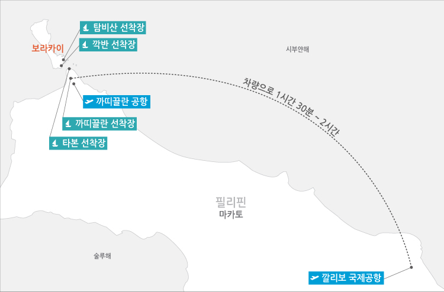

🌴Boracay
Boracay?
|
How To Go Boracay
|
Restaurant
|
Best Hotel

1. 인천 공항 혹은 부산 공항에서의 비행기를 탑승한다.
2. 4시간의 비행을 마친 다음 보라카이의 깔리보 공항(Kalibo)으로 간다.
3. 깔리보 공항에서 나와 그 공항에서 차로 1시간 30분가량을 선착장으로 이동을 한다.
4. 보라카이가 작은 섬이기때문에 배를 타고(20분가량) 들어가면 보라카이 도착!!
+ 보라카이 선착장에서 각자의 숙소까지 약 20~30분 정도 걸린다!
대한민국에서 보라카이까지 총 6~7시간이 걸리는 여정이다.